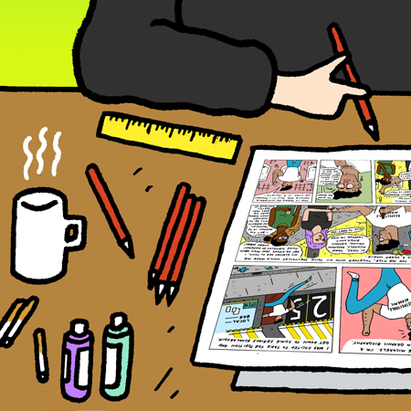
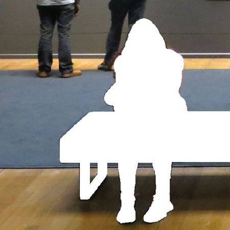
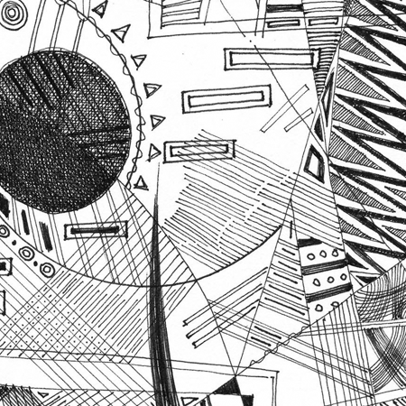
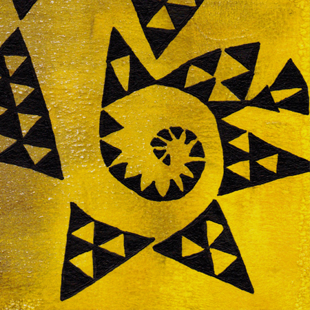

Sequentials content may be difficult to view on smaller screens.
Dismiss

Graphic Content: A Conversation on Comic Biography and History
Candida Rifkind | University of Winnipeg
Jamie Michaels | Independent Scholar and Artist
Keegan Steele | Independent Artist
Comics And/As/Against Fine Art
Edited by Fiona Stewart-Taylor and Madeline B. Gangnes, with Brianna Anderson, Laken Brooks, remus jackson, and Brandon Murakami

Obscured Panels
Chris Gavaler | Washington and Lee University

Poiesis of the Lines
Karna Mustaqim | Esa Unggul University, Jakarta, Indonesia

What Would Paul Klee Say?
Kym Tabulo | Independent Artist
Issue 1.1
Postmodernism: Visualizing a Movement
Issue 1.2
“Queer” as Noun, Adjective, and/or Verb
Issue 1.4
Materiality: Drawing (on) Technologies
Website design and layout by Kenny Anderson and Jason Crider. Logo by Madeline B. Gangnes and remus jackson with font by Comicraft.